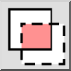

Selección cruzada
Algunas herramientas de selección pueden utilizarse en modo de selección
cruzada. En este modo, no sólo se seleccionan las entidades que están
completamente dentro de un área dada, sino también las entidades que están
sólo parcialmente dentro del área. Esta selección también se conoce como
"selección cruzada".
Modo de selección
Algunas herramientas de selección le permiten elegir un modo de selección
en las opciones de la barra de herramientas. Los modos de selección que están
disponibles son:
- Reemplazar selección:

Reemplaza la selección actual con la nueva selección realizada por la
herramienta de selección activa (por defecto).
- Añadir a la selección:

Añade la selección a la selección actual.
- Eliminar de la selección:

Elimina (resta) la selección de la selección actual.
- Intersect:

Sólo se seleccionan las entidades que ya han sido seleccionadas y que
coinciden con los criterios de la herramienta de selección.